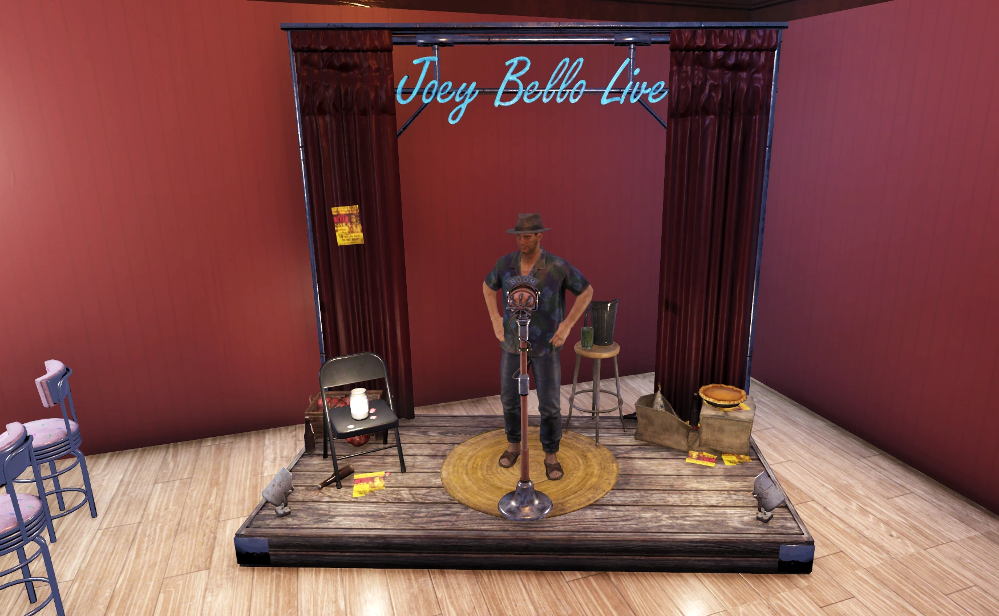
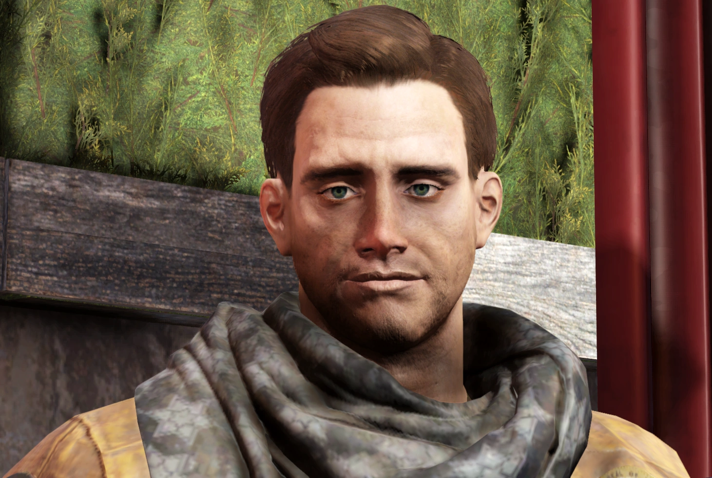
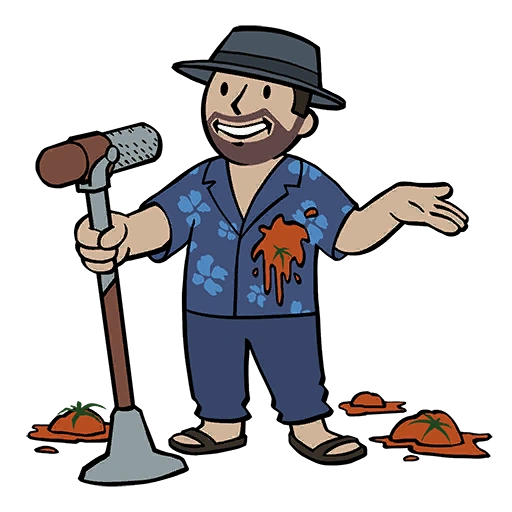
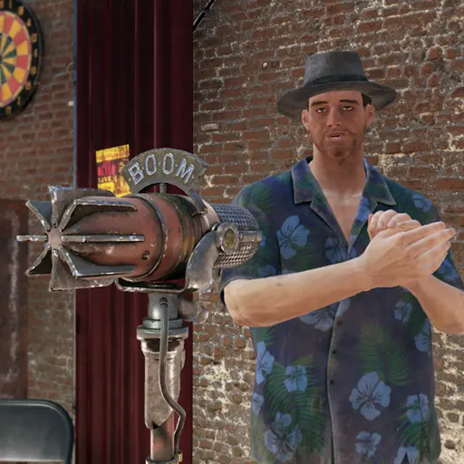

Joey Bello
ジョーイ・ベロ — アパラチアのスタンダップコメディアン
まったく、ロボットがみんなの仕事を奪いに来るってのは本当だったんだな？
でもまあ、面白いもんは面白い。
あいつのネタ、ちょいと『拝借』しちまおうかな。Eyy-yoink！」
概要
ジョーイ・ベロはスタンダップコメディアンであり、アパラチアに登場する居住者である。
Fallout 76の第13シーズン「Shoot for the Stars」のランク35報酬として解放される。
背景

大戦前、ジョーイはニュージャージーの小さな町で両親と兄弟たちと暮らしていた。
父親は消防士だった。
戦争直後の混乱で父と兄弟を失い、彼らはジョーイにとってかろうじて覚えている朧げな記憶となった。
ジョーイは母親と二人で暮らし、母はコメディアンになりたいという彼の夢を応援してくれた。
二人でアトランティック・シティを目指していたが、ジョーイは学校に通ったことがないという。
しかし、ポスト・アポカリプスの過酷な環境が母の心を壊した。
ジョーイが11歳の頃、母は亡くなった。
ジョーイは正確な死因を明かさず、ただ「母さんは最善を尽くしたけど、アポカリプスでの生活には向いてなかった。
先に心が死んだ。
それから体もそれに従った」とだけ語っている。
子供の頃のジョーイは平均より小柄で、ギャングやレイダーの格好の標的だった。
思春期を迎えたのは16歳と遅咲きだった。
厄介な連中を避け、敵意を減らすためにジョークを言うようになった。
笑わせることができれば、攻撃される可能性が減ると考えたのだ。
ジョーイはコメディが自分の命を救ってきたと感じており、人々が気分を良くするためにキャップスを払ってくれるので収入源にもなっている。
皮肉なことに、彼のジョークはオリジナルではなく、バブルガムの包み紙に書かれたジョークを暗記したものだ。
ガム自体は好きでもないのに、お小遣いをガムパックの購入に費やしていた。
ジョーイはちょっとした薬中毒者でもあり、若い頃にデイ・トリッパーを使ったことが始まりだった。
薬を漁ったり、キャップスで取引したりしていた。
彼は薬の使用を深刻には考えておらず、「誰にでも悪癖はある。
こんな悲惨で陰鬱な世界では、幸せを感じさせてくれるものを摂取した方がいい」と指摘する。
ジョーイは最終的にアトランティック・シティにたどり着いたが、母親抜きだった。
銃の腕が壊滅的に下手なので、大変な苦労を要した。
最初は桟橋で小さなギグをこなす厳しい生活だったが、やがてまともな額のキャップスを稼げるようになった。
ロボットと一夜限りの関係を持ったとも主張している。
しかし、マフィアの構成員をネタにしてしまったことで状況は一変した。
「テディ/セオドア・ザ・トー・テイカー」と呼ばれる人物から逃げることになった。
マフィアから逃げてアパラチアに来たジョーイだが、ここが州なのか郡なのかもわかっていない。
Bivのことが気に入っている。
西へ行くのに十分なキャップスが貯まるまでアパラチアに滞在する予定だ。
次の行き先はまだ決めていないが、ベガスかケンタッキーを検討している。
プレイヤーとのインタラクション
ジョーイはエッセンシャルNPCであり、居住者としてC.A.M.P.に配置できる。
専用家具は「ジョーイのステージ」。
ベンダーとしてアルコール、ジャンクアイテム、各種バブルガム、「Live & Love」、「Get RICH quick!」を販売する。
デイリーバフ：Roast Proof
- スタガー軽減
- 火炎ダメージ 10%軽減
- 近接ダメージ 10%軽減
- 爆発ダメージ 10%軽減
装備
- ハワイアン・パンツ・アウトフィット
- ボロボロのフェドラ帽
名言集
アパラチアにもジョークってあるよな？
みんなキャップスを払って俺の軽口を聞いて、惨めな生活を数分間忘れるんだ。
ロケットサイエンスじゃないが、これで飯が食える！」
笑わせ続ければ、生かしておいてくれるかもしれない。
たまにスベれば、タトスの一つくらい投げてくれるかもしれないぜ。
ガキも食わなきゃならないだろ？」
ああもういいや。」
俺はお前の職場に行って○○のやり方を教えたりしねぇぞ！
あーくそ！ハハ、やられた。
ごめんな母さん、悪態貯金箱に10キャップスだ。
くそ。いやツバ！いや、あーふ…ごめん母さん。」
舞台裏

- ジョーイの挨拶「How you doing?」はスクリプトノートで「ニュージャージーの定番フレーズ」と説明されており、Friendsのジョーイ・トリビアーニの真似ではないと明記されている。
- アイドル台詞「Oh, I'm walkin' here!」は1969年の映画「真夜中のカーボーイ」のラッツォ・リッツォの有名な台詞へのオマージュ。
- 「Ring-a-ding-ding!」はフランク・シナトラへのオマージュであり、Fallout: New Vegasのメインクエスト名でもある。
- 「何だ、ピエロだとでも？笑わせるためにいるとでも？」は映画「グッドフェローズ」のトミー・デヴィートの名場面へのオマージュ。
- 月曜日を嘆く台詞は漫画「ガーフィールド」の定番ネタへのオマージュ。
- 「あのパイプからもう一服したい…」は、Fallout 76の有名なランダムエンカウンター「Unusual Pipe（パイプが人生）」への言及。
- ロボットに関するネタの「What's the deal with robots?」はジェリー・サインフェルドの観察コメディスタイルへのオマージュ。
- ジョーイはベガスがまだ健在だという噂を聞いたと述べており、これはFallout: New Vegasで示されている事実と一致する。
ギャラリー


ジョーイ・ベロは、Fallout 76の仲間の中でも特にキャラクターが立っている一人ですね。
ニュージャージー出身のイタリア系コメディアンという設定で、バブルガムの包み紙からジョークを暗記したという経歴が笑えると同時に切ない。
母親との関係や、「笑わせれば殺されない」というサバイバル術は、ポスト・アポカリプスならではの悲哀に満ちています。
舞台裏のオマージュの豊富さも見事で、真夜中のカーボーイ、グッドフェローズ、サインフェルド、ガーフィールド、フランク・シナトラと、アメリカのコメディ・エンタメ文化の集大成のようなキャラクターです。
アトランティック・シティのマフィアから逃げてきたという背景も、彼の「笑い」の裏にある危険と紙一重の人生を感じさせます。
C.A.M.P.にいると賑やかで楽しい仲間ですね。
This article was created by translating and editing Joey Bello from Nukapedia: The Fallout Wiki.
Licensed under the Creative Commons Attribution-Share Alike License (CC BY-SA 3.0).
コミュニティ維持のため、寄付を受け付けております。
> COMMENTS